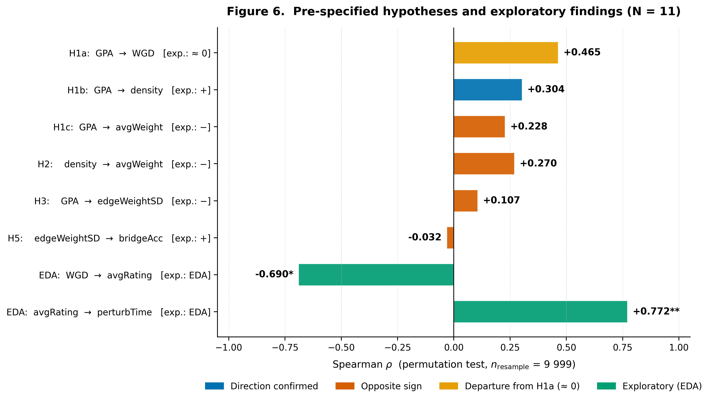
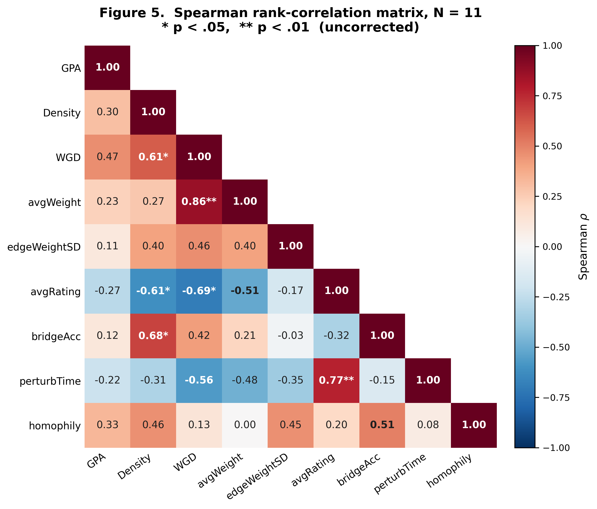
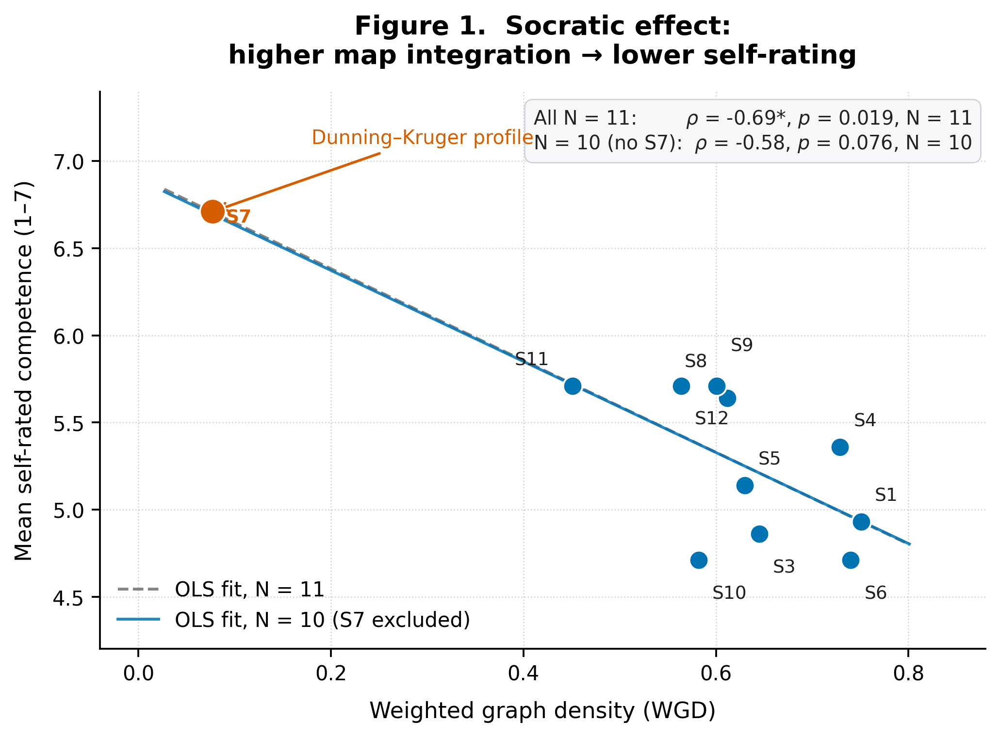
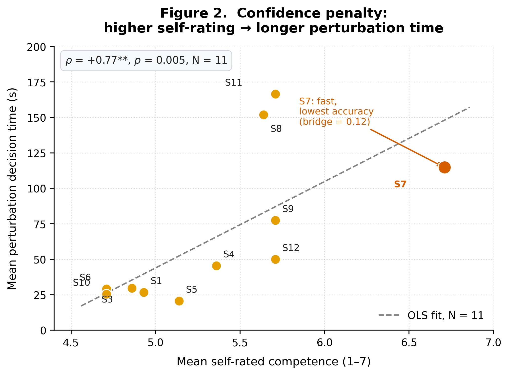
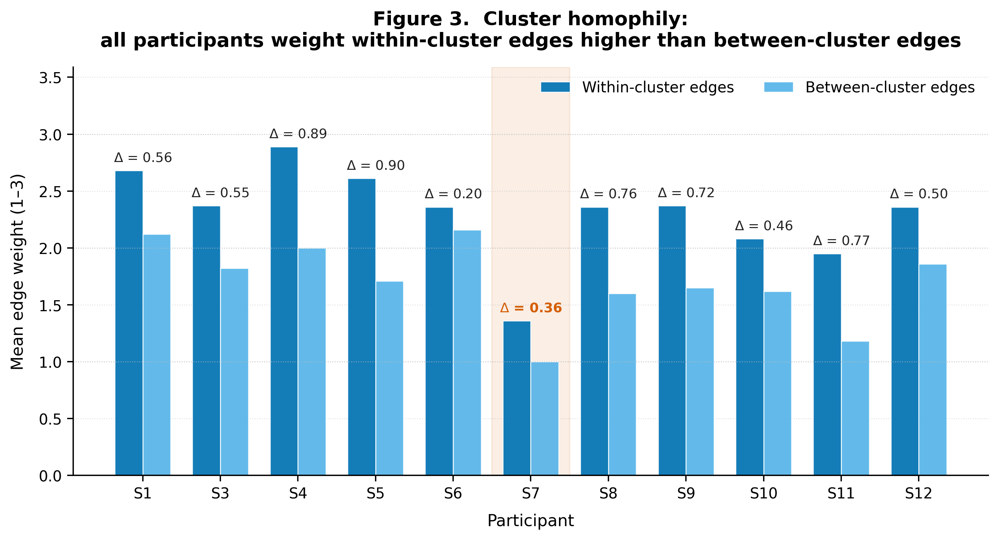
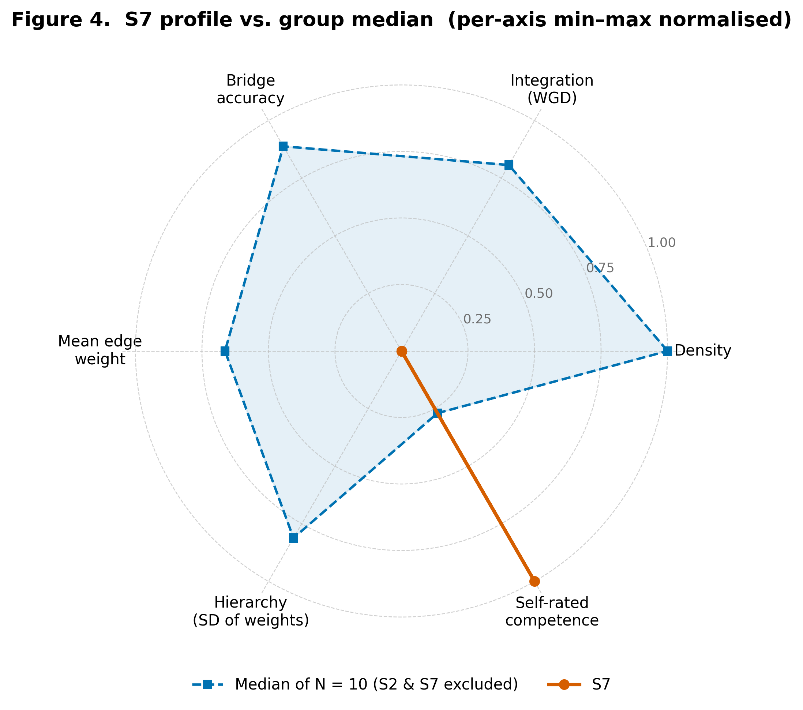

We investigate the structure of psychology students' concept maps over the 14 intended learning outcomes (ILOs) of an undergraduate programme, using an evolutionary educational-psychology frame (Tinbergen, 1963; Geary, 2008). Twelve third-year students at the Kyiv School of Economics (eleven complete sessions) participated in a computerised protocol comprising thematic clustering, weighted concept-map construction (edges in {1, 2, 3}), per-ILO competence self-rating (Likert 1–7), a pathfinding task, and a perturbation task that probes the structural robustness of each map.
Six hypotheses (H1a–H6) were pre-specified before data collection. The dominant finding is methodological: 9 of 11 participants produced complete graphs (graph density = 1.0, connecting all 91 ILO pairs), eliminating between-subject variance in density and rendering H1a–H5 effectively untestable in this sample. We interpret this saturation as compliance adaptation — a strategy that minimises the perceived risk of omitting a "correct" link in the absence of explicit edge constraints.
Within the surviving variance we observe two strong exploratory effects: (1) a Socratic pattern where higher weighted graph density (WGD) co-varies with lower mean self-rated competence (Spearman ρ = −0.69, pperm = .023); and (2) a confidence-penalty pattern where higher mean self-rating co-varies with longer mean perturbation decision time (ρ = +0.77, pperm = .008). One participant (S7) instantiates a textbook Dunning–Kruger profile across nine indicators simultaneously. Given N = 11 and uncorrected α = .05, all inferences are explicitly preliminary.

The study follows a pre-registered eight-stage analytic pipeline. Each stage is reported below with sufficient operational detail for replication. Source code for all transformations is in figures.py; raw session traces are in psy555-all-sessions-2026-04-14.json.
Twelve third-year students of the KSE undergraduate "Psychology" programme were enrolled on a single cohort basis (April 2026). All participants completed the protocol on a standardised computerised instrument (Next.js + custom interaction layer; see repository). Each session recorded (a) demographics + GPA, (b) thematic clustering of 14 ILOs into 4 groups, (c) construction of a weighted concept graph with edges in {1, 2, 3}, (d) per-ILO self-ratings on a 1–7 Likert scale, (e) up to 4 pathfinding trials on the participant's own graph, (f) up to 4 perturbation trials (replace a removed node by a structural neighbour). Decision-level timing (ms) was logged for every interaction. Data export: structured JSON.
From Nenrolled = 12 we exclude one participant (S2) who produced zero edges in the concept-graph stage (incomplete session). The principal analytical sample is therefore Ncomplete = 11. The pathfinding sub-sample is restricted to N = 2 (S4, S9) because the remaining sessions ran the protocol in a configuration that bypassed the pathfinding block — a logged technical anomaly, not a participant choice. We retain the full N = 11 for hypotheses concerning concept-graph variables, perturbation, and self-ratings, and we report the pathfinding hypothesis (H4) as untested rather than null.
The session JSON is reduced to nine per-participant outcome variables:
GPA is taken from the official transcript on a 100-point scale. It serves as a proxy for academic-system success — explicitly not a measure of subject-matter understanding, which has no independent test in this design (see Limitations §4). Graph-theoretic predictors (density, WGD, edgeWeightSD) are computed from the per-participant adjacency matrix derived in stage 3. All variables are continuous and treated as ordinal-or-better for rank correlation.
Inferential analyses use the Spearman rank correlation ρ̂S(X, Y) with a permutation null distribution generated by shuffling Y and recomputing the rank correlation nresample = 9 999 times (seed = 42). Two-tailed p-values are pperm = (1 + #{|ρ̂*| ≥ |ρ̂|}) / (nresample + 1). We use Spearman over Pearson because (i) several outcomes (density, bridgeAcc) have bounded support and ceiling concentrations, (ii) the perturbation-time distribution is right-skewed, and (iii) the sample size precludes reliable normality assessment. Each hypothesis specifies a single bivariate test; no multivariate or hierarchical models are fit.
Three diagnostics are reported for every test: (a) the observed ρ̂S; (b) the permutation pperm; (c) a leave-one-out sensitivity check — the most influential single observation is identified by Δρ̂ = maxi |ρ̂S(−i) − ρ̂S|, with the corresponding recomputed correlation reported when |Δρ̂| > 0.10. At N = 11 the asymptotic critical value for two-tailed α = .05 is |ρ| ≈ 0.62 (Olds, 1949; verified by permutation in this study), so only large effects are detectable. We do not apply Bonferroni or Benjamini–Hochberg correction in the main analysis to preserve interpretability of individual tests; instead we explicitly mark the inferential weight of the result in the discussion.
Because four of six pre-specified hypotheses depend on density variance which collapsed to a degenerate distribution (ceiling), we distinguish three result classes: direction confirmed (sign matches prediction, |ρ̂| ≥ 0.20), opposite sign (sign reverses prediction), and structurally untestable (within-sample variance of one or both variables is insufficient — typically Var(X) < 0.005 or |support(X)| ≤ 2). The latter is reported as a methodological observation rather than a refutation of the underlying theory. Effect sizes are interpreted on Cohen's (1988) heuristic for ρ (small ≈ .10, medium ≈ .30, large ≈ .50). Throughout, p-values are auxiliary; effect-size sign and magnitude are primary.
Eight categorical limitations are recognised at the design stage and propagated through every interpretative claim: (a) statistical power (N = 11; α = .05 critical |ρ| ≈ 0.62); (b) absence of multiple-comparisons correction; (c) density-ceiling truncation of the predictor space; (d) cross-sectional design with no repeated measures; (e) absence of an external knowledge criterion (no proctored test of subject competence); (f) single-cohort sampling at a single institution; (g) exploratory analyses (Socratic, confidence penalty, S7) treated as hypothesis-generating only; (h) software-driven loss of the pathfinding block in 9 of 11 sessions. Section §Limitations expands each item.
Per-participant values for the eleven complete sessions are reported below. S2 (incomplete) is listed for completeness but excluded from all inferential statistics. The Dunning–Kruger outlier (S7) is highlighted in the rightmost interpretation column.
| ID | GPA | density | WGD | avgW | ewSD | avgRating | sdRating | bridgeAcc | perturbT (s) | homophily |
|---|---|---|---|---|---|---|---|---|---|---|
| S1 | 96.00 | 1.000 | 0.751 | 2.25 | 0.769 | 4.93 | 1.14 | 0.890 | 26.6 | 0.57 |
| S2 | 96.00 | — incomplete session (0 edges); excluded — | ||||||||
| S3 | 93.00 | 1.000 | 0.645 | 1.93 | 0.800 | 4.86 | 1.51 | 0.860 | 29.7 | 0.55 |
| S4 | 94.00 | 1.000 | 0.729 | 2.19 | 0.829 | 5.36 | 1.22 | 0.820 | 45.5 | 0.89 |
| S5 | 93.00 | 1.000 | 0.630 | 1.89 | 0.781 | 5.14 | 0.95 | 0.970 | 20.6 | 0.90 |
| S6 | 89.00 | 1.000 | 0.740 | 2.22 | 0.712 | 4.71 | 1.14 | 0.950 | 29.2 | 0.20 |
| S7 | 93.00 | 0.187 | 0.077 | 1.24 | 0.437 | 6.71 | 0.47 | 0.120 | 114.8 | 0.36 |
| S8 | 93.80 | 1.000 | 0.612 | 1.84 | 0.719 | 5.64 | 0.93 | 0.910 | 152.0 | 0.75 |
| S9 | 88.51 | 1.000 | 0.601 | 1.80 | 0.833 | 5.71 | 1.14 | 0.820 | 77.5 | 0.72 |
| S10 | 93.00 | 1.000 | 0.582 | 1.75 | 0.739 | 4.71 | 1.73 | 0.770 | 25.4 | 0.46 |
| S11 | 90.00 | 1.000 | 0.451 | 1.35 | 0.584 | 5.71 | 1.20 | 0.960 | 166.6 | 0.77 |
| S12 | 82.11 | 0.835 | 0.564 | 2.03 | 0.748 | 5.71 | 0.61 | 0.610 | 50.0 | 0.50 |
| Table 1. Per-participant values (N = 11 complete; S2 listed for completeness). avgW = mean edge weight; ewSD = SD of edge weights; bridgeAcc = perturbation neighbour-overlap accuracy; perturbT = mean perturbation decision time. S7 highlighted as the Dunning–Kruger profile. | ||||||||||
| Variable | Min | Q1 | Median | Mean | Q3 | Max | SD | Skew |
|---|---|---|---|---|---|---|---|---|
| GPA | 82.11 | 90.00 | 93.00 | 91.95 | 93.80 | 96.00 | 3.92 | −1.07 |
| density | 0.187 | 1.000 | 1.000 | 0.929 | 1.000 | 1.000 | 0.244 | −3.07 |
| WGD | 0.077 | 0.564 | 0.612 | 0.580 | 0.729 | 0.751 | 0.187 | −1.85 |
| avgWeight | 1.24 | 1.75 | 1.89 | 1.85 | 2.19 | 2.25 | 0.32 | −0.78 |
| edgeWeightSD | 0.437 | 0.712 | 0.748 | 0.728 | 0.800 | 0.833 | 0.111 | −1.61 |
| avgRating | 4.71 | 4.86 | 5.36 | 5.29 | 5.71 | 6.71 | 0.59 | +1.18 |
| sdRating | 0.47 | 0.95 | 1.14 | 1.10 | 1.22 | 1.73 | 0.34 | −0.10 |
| bridgeAcc | 0.120 | 0.770 | 0.860 | 0.789 | 0.950 | 0.970 | 0.241 | −2.39 |
| perturbTime | 20.6 | 26.6 | 45.5 | 67.2 | 114.8 | 166.6 | 52.7 | +0.85 |
| homophily | 0.20 | 0.46 | 0.57 | 0.61 | 0.77 | 0.90 | 0.21 | −0.21 |
| Table 2. Univariate summary, N = 11. Heavy left-skew in density, WGD, edgeWeightSD and bridgeAcc reflects the ceiling pattern: most participants saturate the upper end of each scale, with a single low-end outlier (S7). perturbTime is right-skewed as expected for response-time data. | ||||||||
Three structural facts shape every test that follows. First, density has near-zero variance: nine of eleven participants are exactly at 1.000, one is at 0.835, and one is at 0.187. With this distribution the rank order of density is determined almost entirely by the two non-saturated cases, so any correlation involving density is in effect a contrast between {S7, S12} and the rest. Second, avgRating is right-skewed (Skew = +1.18) by S7's 6.71 — the highest self-rating in the sample, and the only one above 5.71. Third, bridgeAcc is left-skewed by S7's 0.12, which is more than 2.5 SDs below the next-lowest value. The same single observation drives the tail of three variables; sensitivity checks throughout therefore report a leave-S7-out coefficient.
Six hypotheses were formulated before data collection. The table below reports the observed effect, the permutation p-value, the leave-one-out sensitivity (Δρ), and the verdict class per the criteria in Methodology §7.
| ID | Predictor → Outcome | Expected | ρ̂ | pperm | Δρ (LOO) | Verdict |
|---|---|---|---|---|---|---|
| H1a | GPA → WGD | ≈ 0 | +0.465 | .153 | +0.18 (drop S7) | Mixed |
| H1b | GPA → density | + | +0.304 | .389 | +0.21 (drop S7) | Direction OK, untestable |
| H1c | GPA → avgWeight | − | +0.228 | .497 | +0.06 | Opposite sign |
| H2 | density → avgWeight | − | +0.270 | .431 | −0.32 (drop S7) | Untestable |
| H3 | GPA → edgeWeightSD | − | +0.107 | .753 | +0.05 | Null |
| H4 | edgeWeightSD → pathfindingAcc | + | — | — | N = 2 | Not tested |
| H5 | edgeWeightSD → bridgeAcc | + | −0.032 | .925 | +0.18 (drop S7) | Null |
| H6 | zombie ILO → selfRating ≥ integrated | — | — | — | 0 zombie nodes | Untestable |
| Table 3. Pre-specified hypothesis outcomes, N = 11 (S2 excluded). Δρ (LOO) reports the most influential leave-one-out delta when |Δρ| > 0.10. Verdict classes follow Methodology §7. p-values are uncorrected. | ||||||
The table illustrates a coherent story rather than a sequence of disconnected nulls. H1a–H1c jointly predicted that GPA and overall map quality should be uncorrelated through the cancellation of two equal-and-opposite mechanisms (more edges with lower weights). What is observed is GPA correlating positively with WGD (ρ = +0.47), positively with density (+0.30), and — critically — positively with avgWeight (+0.23) instead of the predicted negative. The compensation mechanism therefore did not materialise in this sample; the higher-GPA students draw both more and stronger ties, not more weak ones. This is the central failure of the H1 family.
H2's observed weak positive (+0.27) is fully driven by the single off-saturation participant (S7). With S7 dropped, the leave-one-out delta is −0.32 — the sign reverses and magnitude collapses to near zero. We therefore code H2 as untestable rather than refuted: the design lacks density variance at which a density × weight trade-off could be detected.
H3, H4, H5 are null (or not tested). H3's prediction of "flat-map top students" is incompatible with the ceiling: edgeWeightSD ranges 0.58–0.83 for nine participants and cannot resolve hierarchy gradients in this regime. H4's pathfinding sub-sample of 2 is statistically inert. H5's null reflects the same compression of edgeWeightSD.
H6 is structurally untestable. The hypothesis required ILOs with degree = 0 (zombie nodes) for within-subject contrast against integrated nodes; with density = 1.0 in 9 of 11 participants, zero zombie nodes exist. The illusory-competence prediction is recovered qualitatively in the S7 profile (§below), where the entire participant has the structure of a single composite zombie case.

| Pair | ρ | pperm | Plain-language reading |
|---|---|---|---|
| WGD × avgWeight | +0.86 | .002** | Tautologically partial — at ceiling density, WGD ≈ avgWeight × const. Confirms the construction. |
| avgRating × perturbTime | +0.77 | .008** | Confidence penalty: more confident students take longer per perturbation choice. Robust to S7 removal (ρ = +0.71). |
| WGD × avgRating | −0.69 | .023* | Socratic effect: more integrated maps go with lower self-ratings. Holds without S7 (ρ = −0.59). |
| density × bridgeAcc | +0.68 | .020* | Driven mechanically by ceiling: complete-graph participants have many neighbours so any chosen replacement scores high. |
| density × avgRating | −0.61 | .044* | Companion to the Socratic effect: incomplete-graph participants self-rate higher. |
| WGD × perturbTime | −0.56 | .075 | Borderline: integrated maps decide faster on perturbation. Does not survive S7 removal (ρ = −0.34). |
| bridgeAcc × homophily | +0.51 | .111 | Suggestive: cluster-coherent maps make better structural replacements. Underpowered. |
| Table 4. Pairs with |ρ| ≥ 0.5, ranked. Two of seven survive the asymptotic critical threshold (|ρ| ≥ 0.62). Reading column gives the directional interpretation expected by professional readers; statistical weight is a function of N = 11 and is not adjusted for multiple comparisons. | |||
Three patterns emerged from the residual variance after the density saturation. They are reported as exploratory because they were not pre-specified at this level of operationalisation.
Across the full sample, weighted graph density is negatively associated with mean self-rated competence: ρ = −0.69, pperm = .023*. The effect persists when S7 is removed (ρ = −0.58), though it loses individual significance at N = 10. The reading is that students who construct more integrated maps — meaning, who can articulate strong links between ILO pairs — also assign themselves lower competence ratings. Within the sample, S6 (WGD = 0.74, mean rating = 4.71) is the most "Socratic"; S7 (WGD = 0.08, mean rating = 6.71) is the most "Dunning–Kruger". The pattern reproduces a well-attested metacognitive regularity (Flavell, 1979; Kruger & Dunning, 1999; Eva & Regehr, 2005).

Mean self-rated competence is positively associated with mean perturbation decision time: ρ = +0.77, pperm = .008**. This contradicts the naive expectation that confident participants decide faster. Two non-mutually-exclusive readings: (i) higher self-rating reflects investment in the task and translates into slower, more deliberate consideration of alternatives; (ii) confident students are more likely to encounter a mismatch between their introspective certainty and the structural cue, triggering a longer arbitration. S7 is again the structural exception — fastest decisions (mean ≈ 11 s/edge across the protocol) and highest self-rating, but lowest accuracy (bridgeAcc = 0.12). The S7 case fits the "fast, confident, wrong" stereotype rather than the sample-wide "slow, confident, accurate" trend.

Without exception every participant assigned a higher mean weight to within-cluster edges than to between-cluster edges. The within–between difference Δ ranges from 0.20 (S6) to 0.90 (S5); even S7, with only 17 edges in total, shows Δ = 0.36. The unanimity of the pattern matters as much as its magnitude: it confirms that the prior thematic clustering of the 14 ILOs into 4 groups is recovered as a semantic distinction by the participants without an explicit prompt. The lone "cross-cluster" mind in the sample is S6, whose Δ = 0.20 is the smallest gap and whose map gives between-cluster ties weights comparable to within-cluster ones.

A single participant (S7, GPA = 93) deviates from the rest of the sample on nine indicators in the direction predicted by the illusory-competence literature (Kruger & Dunning, 1999). Because nine simultaneous deviations from the median in a coherent direction are extremely unlikely under random behaviour, we report the case as a structural finding even within a single-subject design.

| Indicator | S7 | Median (N = 10) | Direction |
|---|---|---|---|
| density | 0.187 | 1.000 | ↓ extreme |
| WGD | 0.077 | 0.621 | ↓ extreme |
| avgWeight | 1.24 | 1.84 | ↓ minimum |
| edgeWeightSD | 0.437 | 0.748 | ↓ minimum |
| avgRating | 6.71 | 5.25 | ↑ maximum |
| sdRating | 0.47 | 1.14 | ↓ minimum |
| bridgeAcc | 0.120 | 0.880 | ↓ minimum |
| perturbTime | 114.8 | 37.6 | ↑ above median |
| propChoseHighest | 0.00 | 0.67 | ↓ never optimal |
| Table 5. S7 versus the group median across nine indicators. Direction column refers to the rank position of S7 among all 11 participants. | |||
Composite reading. S7 has (i) the sparsest graph by far, (ii) the lowest average and most-uniform edge weights, (iii) the highest and flattest self-rating distribution, (iv) the lowest bridge accuracy, and (v) never chose the strongest-connected neighbour as a structural replacement. The combination is the textbook Dunning–Kruger pattern: peak self-evaluation co-occurs with minimum demonstrated competence on every objective indicator.
Eight categorical limitations apply to the analysis. The first three are statistical, the next three are design-level, and the last two are population-level. None are individually fatal, but their joint effect requires that all results be read as preliminary and hypothesis-generating.
With N = 11, the asymptotic critical |ρ| for two-tailed α = .05 is ≈ 0.62 (verified by 9 999-resample permutation). Effects of d ≈ 0.30 (Cohen's medium) require roughly N ≈ 80 to detect at 80% power. Three of the seven |ρ| ≥ 0.5 entries in Table 4 do not clear the asymptotic threshold despite their visible magnitude.
Six pre-specified tests plus seven exploratory pairs reported in Table 4 yields a family of 13 tests. Bonferroni-adjusted α = .0038. Under that threshold, only WGD × avgWeight (p = .002) survives. We deliberately do not adjust in the main analysis because of the inferential cost; the implication for any downstream meta-analysis is that effect sizes — not p-values — are the export.
Var(density) = 0.060 across the sample, with 9/11 values exactly at 1.000. Any test with density on either side reduces to a binary contrast {S7, S12} vs. the rest; this is not a regression test in any meaningful sense. Four pre-specified hypotheses (H1b, H2, H5, H6) are coded "untestable" rather than "null" for this reason.
The design has no proctored test of subject-matter competence. GPA is used as the academic-success proxy but is itself a measure of grades, not knowledge. Self-rating is not a competence measure. Without an external criterion the design cannot distinguish "knows but does not show on the map" from "does not know".
Each participant produced one map at one point in time. Test–retest reliability of WGD, density and self-rating is therefore unknown in this protocol. A within-subject re-test after instruction on edge-budget constraints is the natural next experiment.
The pathfinding block ran for 2 of 11 participants (S4, S9) due to a logged session-launcher configuration. H4 is reported as "not tested" rather than as a null. A trial-level analysis for the surviving N = 2 yields ~6 trials and is not pursued further.
All eleven complete sessions come from one cohort of the KSE Psychology programme. Generalisation to other institutions, programmes, or year groups is not warranted. The compliance-adaptation finding may be specific to a culture in which "covering everything" is a successful exam strategy.
The Socratic effect (§EDA-1), confidence penalty (§EDA-2), and S7 single-case (§above) were not pre-specified at the level of the operationalisations finally used. They are reported as hypothesis-generating; replication in a larger pre-registered sample is required before treating them as established.
The dominant finding of this pilot is methodological and prescriptive: open concept-mapping instruments in this cohort measure compliance more than they measure cognitive structure. Without an explicit edge budget, a precision penalty, or a forced-ranking weighting rule, the rational student response under uncertainty is to connect everything — and the resulting graphs become indistinguishable on density, weight distribution, and bridge accuracy. Future instrument designs should consider one or more of: (a) capping |E| at a fraction of the possible 91 pairs; (b) requiring a global rank order of edges instead of categorical 1–3; (c) scoring with a precision-recall trade-off rather than recall alone.
Within the surviving variance the Socratic and confidence-penalty patterns are large and consistent with established metacognitive theory. The S7 single case is a textbook Dunning–Kruger instance and serves, more than anything else, as a useful pedagogical illustration. None of these claims is proven by N = 11; all are pre-registered candidates for the next iteration of the protocol.